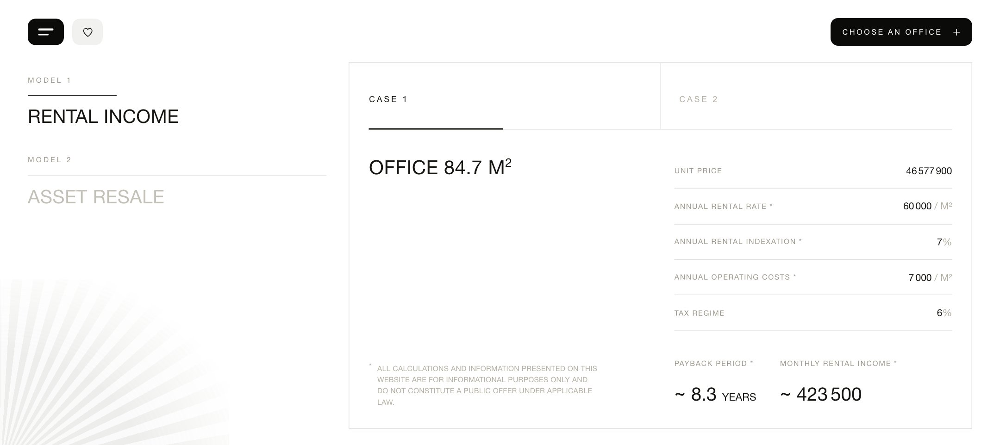

b5-REDO (vanilla, AIR-мова) ↔ live AIR investment
Попередній batch-5 мав правильну композицію+механіку, АЛЕ фасад premium-editorial (serif+атмосфера). Redo переписано під РЕАЛЬНУ AIR-мову: пласке near-white, гротеск скрізь, hairline, нуль декору. Механіка звірена числами; фасад — око Єгора.
01 · invest-calculator ↔ live b11


наше NORTH (redo v2 · скрін-референс): пласке, гротеск, hairline, панель у hairline-рамці як live, кутова fan-графіка, велика порожнеча, чорний чіпlive AIR: те саме — Swiss tech-minimal
Скрін-референс v3.3 (redo-v2): панель тепер у hairline-рамці + кутова fan-графіка + рухомий black underline під активним CASE. Фасад-греп чистий: 0 serif (гротеск і в числах), 0 washes/тіней. ✅ ПЕРЕВІРЕНО ЧИСЛАМИ (поведінка, не піксель): renders 0-err, case-consistent (7.4=readout), office-update (268.5). ⚠️ Геометрія per-element проти spec/ НЕ звірено (0 checks — для AIR dummy-фасаду answer-key немає, element-gate = springs-only); фасад/геометрію судить ОКО ЄГОРА проти живого AIR, не гейт.
02 · resale-steps ↔ live b12
наше (redo, sub-tab B): гротеск ~40%, flat-cards тільки з ✓, hairlinelive AIR: параграф + ~40% + flat check-cards
Картки FLAT (0 тіні/радіусу, тільки ✓); «~40%» гротеск (не serif); hairline-розділювачі; чорний underline під активним sub-tab. ✅ ПЕРЕВІРЕНО ЧИСЛАМИ (поведінка): tab-hook 1→2, clean-handoff (overlapBad=false), 0 err. ⚠️ Геометрія per-element проти spec/ НЕ звірено (0 checks — AIR dummy-фасад, answer-key немає) — фасад судить ОКО ЄГОРА.